Rólam
A Teljesség, vagyis a Komplexitás perspektívájából experimentálom a Létezés Esszenciáját... Összekötöm az Eget a Földdel... a Teóriát a Praktikával... A Láthatatlan Világot a Láthatóval...
Megtapasztalásaimat impulzusként jelenítem meg a Miracle Garden Terében, ahol Holisztikus Konzultációkat tartok, Lélekoldó Mentorálásokat vezetek metafizikai, kvantumpszichológiai megközelítéssel.
Kapcsolódásunk Terében világossá lesz a Teremtett világ, benne flóra és fauna, s az ember Lényének komplexitása, új perspektívákat nyitva a testi-lelki-szellemi evolúcióra.
Az Égi Törvények, az Önvaló megismerése, az érzelmi intelligencia fejlesztése lehetővé teszi, hogy a Létezést ne szenvedésként, hanem csodálatos utazásként éljük meg.
Megértettem: Létezésemet teherként cipelem, vagy mesterelem. Meghoztam a döntést: a Létezésem Mestere leszek. Megtapasztalásaimat mások megértésére és fejlődésére fordítom.
Tanulmányi és tapasztalati tereim: Család- és Szociálpedagógia, Táplálkozástudományok, Yoga és Sport, Kvantumpszichológiai és Metafizikai Ismeretek.
Soha nem elégedtem meg csupán a teóriával – mindig a praktikában értettem meg a lényeget. Konzultációs Terem lehetővé teszi, hogy rugalmasan, online is kapcsolódhassunk.
Rájöttem, hogy az emberi Létezésnek a Teljesség ad értelmet. A Holisztika alapműveltség, és az Elme Tisztasága kulcs.
Ajándék: egy órás kötetlen telefonhívás vagy videóbeszélgetés minden érdeklődőnek – innen indul minden.
A Teret együtt hozzuk létre, alakítjuk, hagyjuk el és térünk vissza. Minden pillanat a fejlődés és gyógyulás lehetőségét hordozza.


 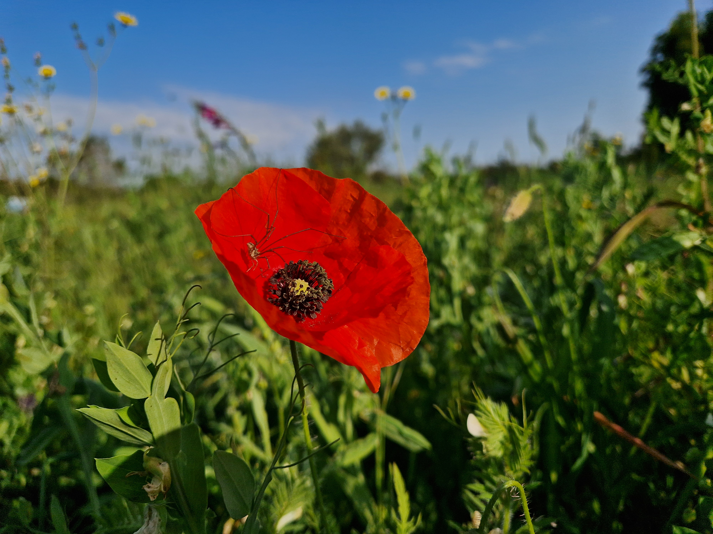
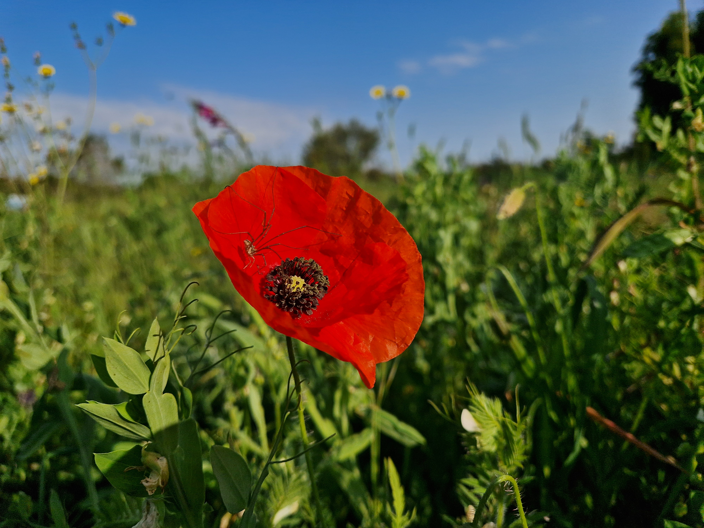

 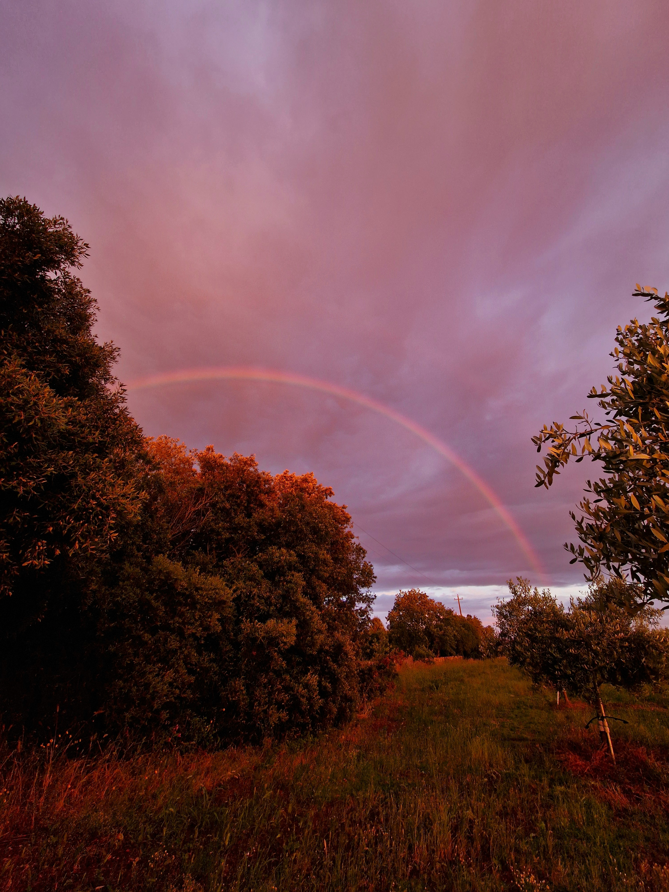
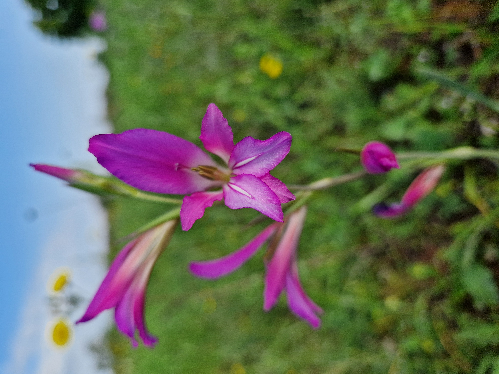
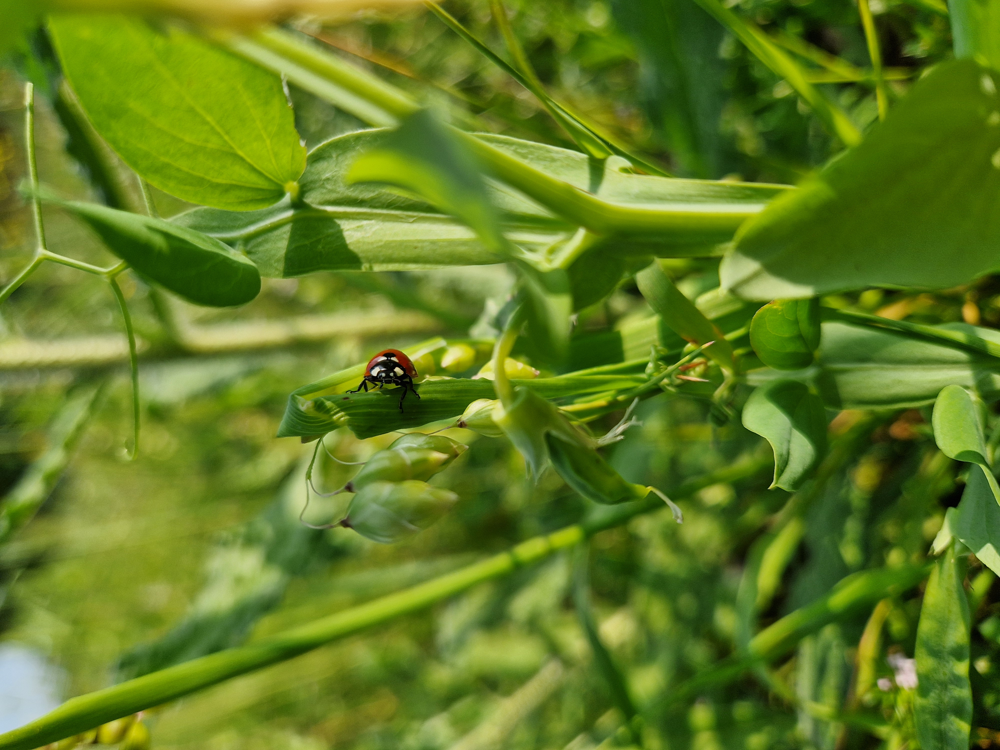
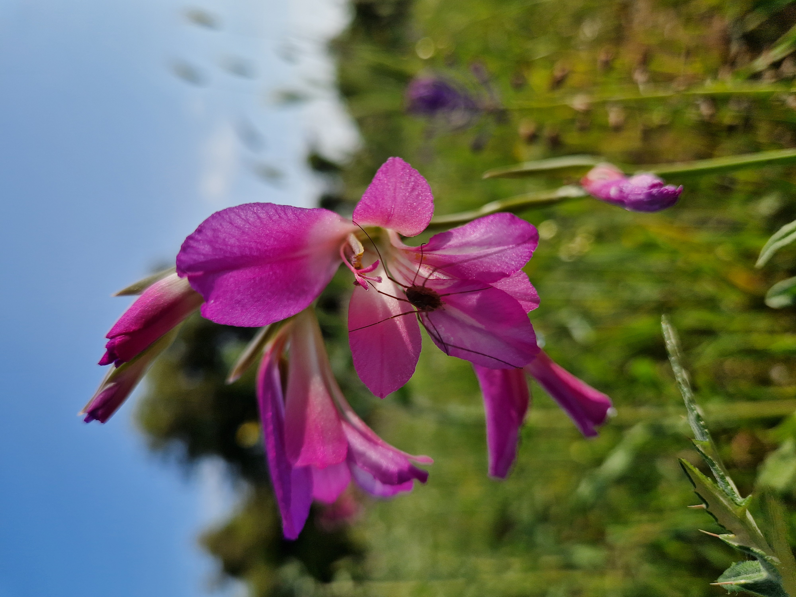
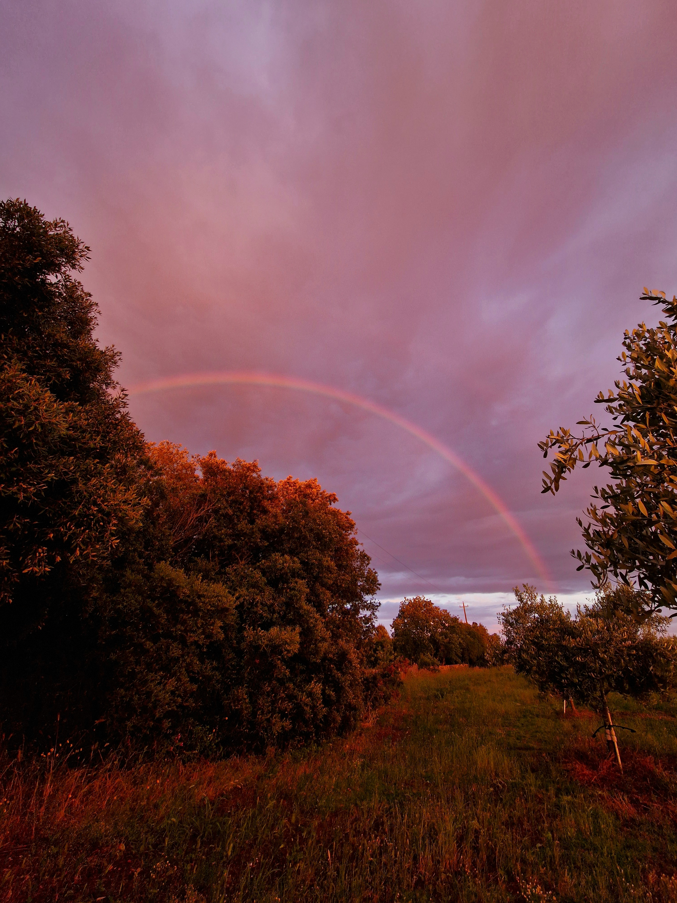
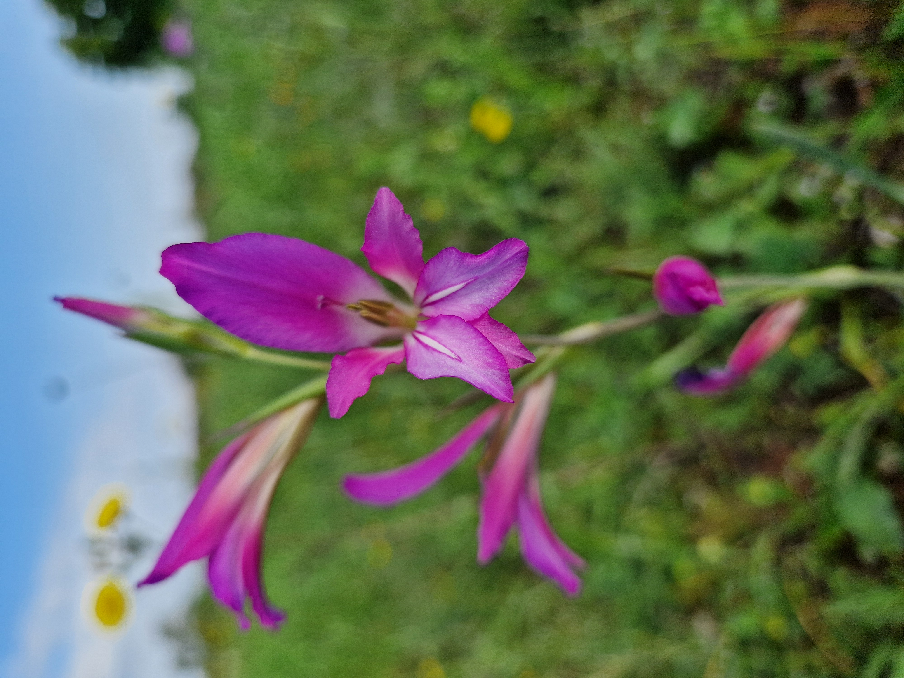
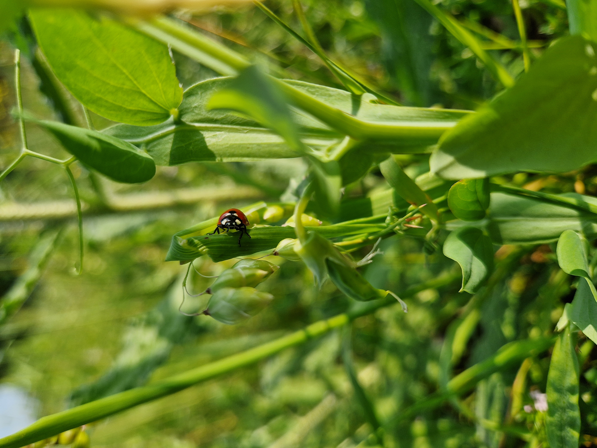
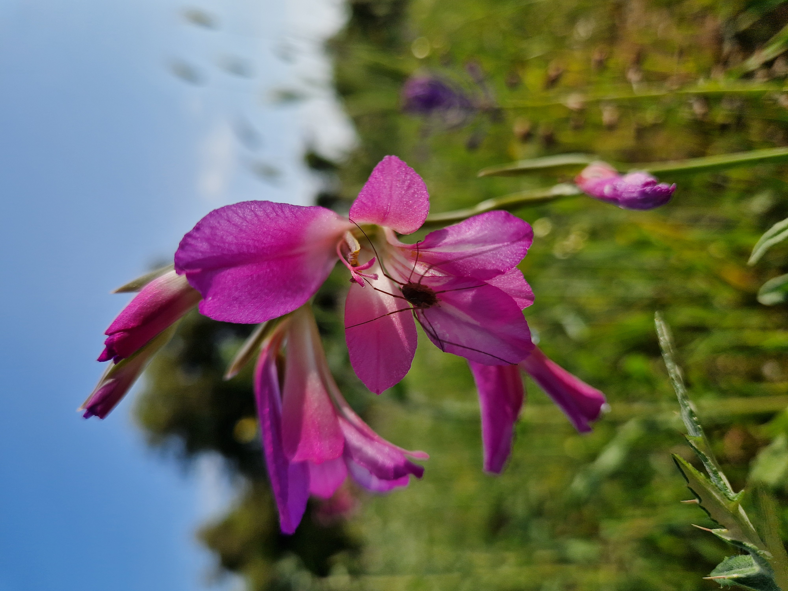
 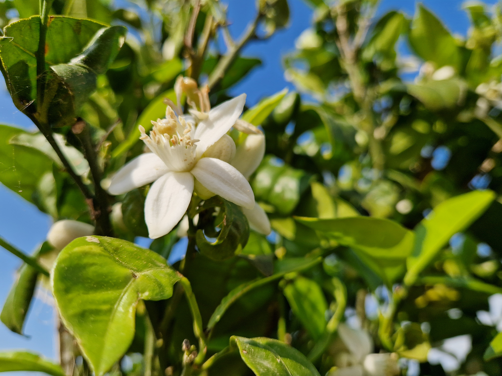
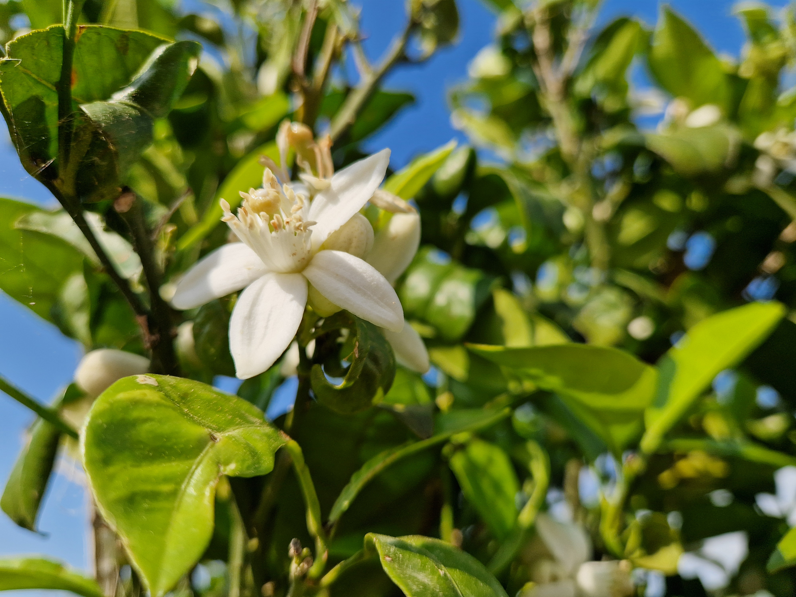
 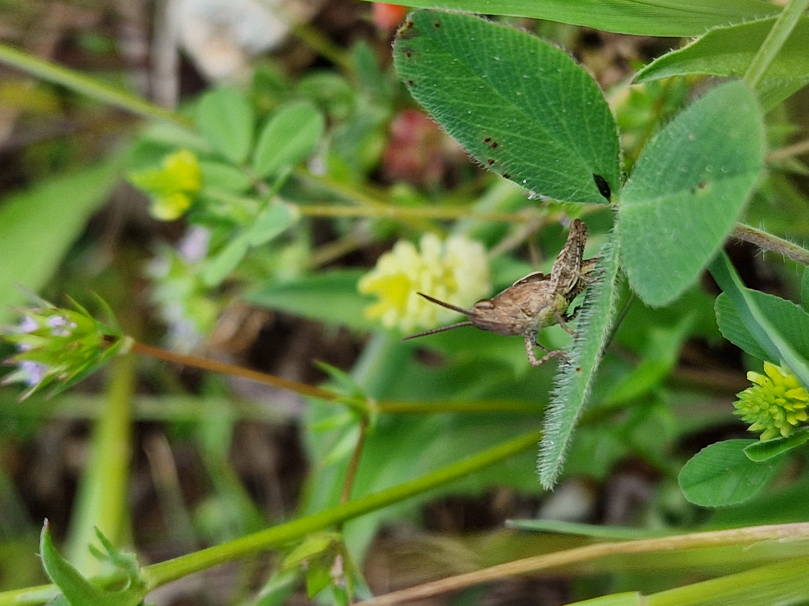
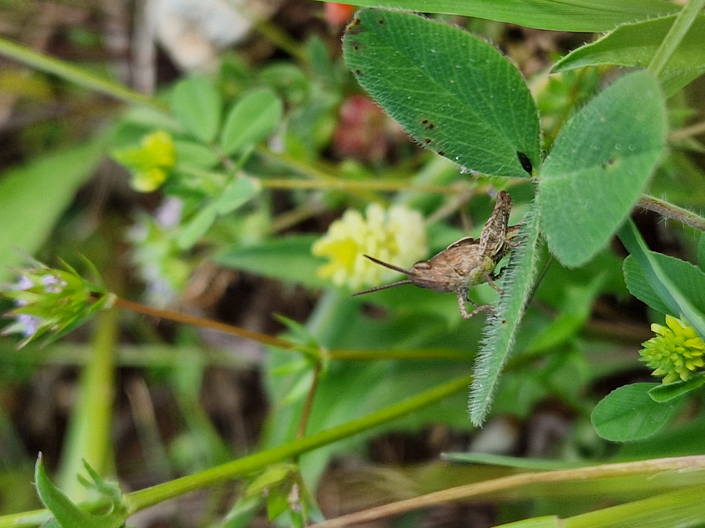